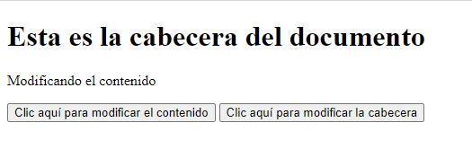
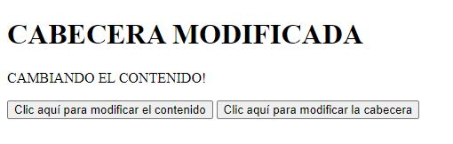
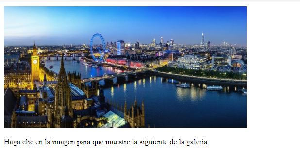
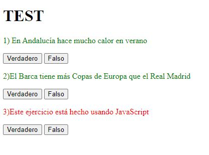
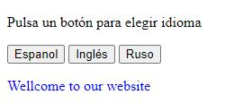
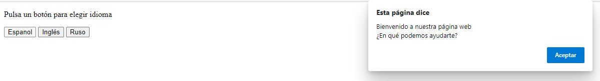

0) Realizar las siguientes acciones en caso de no estar ya realizadas:
a) Instalar dos navegadores adicionales a los que ya vengan por defecto.
b) Realizar algunas opciones de configuración en el editor Visual Studio Code: Prettier, Live Share, Git lens, Editor Config, Polacode, Eslint, Indent Rainbow, y svg y explicar para que sirve cada una de ellas.
1) Agrupar todos los ejemplos del apartado 6, en un único archivo HTML y un archivo javascript externo de modo que se vean claramente cómo se pueden mostrar mensajes al usuario de distintas formas.
2) Modificar el ejemplo 1.8 de modo que se añada un nuevo botón que permita cambiar el contenido de la cabecera. Veamos una imagen del resultado al ejecutarlo y de cuando se hace clic en los dos botones.
 
3) Elabora una secuencia de imágenes con al menos tres fotogramas. Según el usuario vaya haciendo clic sobre las imágenes, la secuencia se irá reproduciendo. Como ayuda mirar el siguiente ejemplo:
https://www.w3schools.com/js/tryit.asp?filename=tryjs_lightbulb

4) Realizar un test de tres preguntas donde cada pregunta tenga dos botones (verdadero y falso). Dependiendo de si el usuario hace clic en verdadero o en falso la frase se pone verde (acierto) o roja (fallo). Para el ejemplo de la imagen el usuario hizo clic en Verdadero (respuesta correcta), Falso (respuesta correcta) y Falso (respuesta incorrecta).

5) Diseña una web con tres botones para que al pulsarlos se genere un mensaje de bienvenida en ruso, español e inglés en la misma página. El mensaje irá en un párrafo etiqueta <p>. Se pide que los mensajes tengan un color diferente dependiendo del idioma.

6) Modifica el código anterior para que los mensajes de bienvenida se generen con alertas. Además se añadirá la frase "¿En qué puedo ayudarte?" en los respectivos idiomas en una línea distinta al mensaje de bienvenida.
